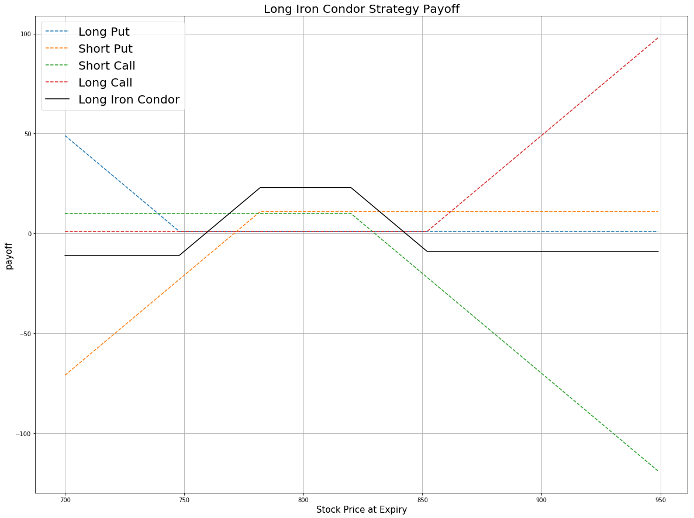

Definition
Iron Condor is an option strategy which involves four option contracts.All options have the same expiration date. The order of strike for four contracts is A > B > C > D.
| Position |
Strike |
| long 1 OTM put |
A |
| short 1 OTM put |
B |
| short 1 OTM call |
C |
| long 1 OTM call |
D |
The Iron Condor is the combination of a bear put spread and a bull call spread in which the strike price of the long put is lower than the strike price of the long call. If the stock price is between the two short strike prices when the options expire, the strategy will be profitable.
Payoff
price = np.arange(700,950,1)
k_call_higher = 850 # the strike price of OTM call(Higher k)
k_call_lower = 840 # the strike price of OTM call(Lower k)
k_put_higher = 760 # the strike price of OTM put(Higher k)
k_put_lower = 750 # the strike price of OTM put(Lower k)
premium_call_higher = 1 # the premium of OTM call(Higher k)
premium_call_lower = 10 # the premium of OTM call(Lower k)
premium_put_higher = 11 # the premium of oTM put(Higher k)
premium_put_lower = 1 # the premium of OTM put(Lower k)
# payoff for the long put position
payoff_long_put = [max(premium_put_lower, k_put_lower-i-premium_put_lower) for i in price]
# payoff for the short put position
payoff_short_put = [min(premium_put_higher, -(k_put_higher-i+premium_put_higher)) for i in price]
# payoff for the short call position
payoff_short_call = [min(premium_call_lower, -(i-k_call_lower+premium_call_lower)) for i in price]
# payoff for the long call position
payoff_long_call = [max(premium_call_higher, i-k_call_higher-premium_call_higher) for i in price]
# payoff for Long Iron Condor Strategy
payoff = np.sum([payoff_long_put,payoff_short_put,payoff_short_call,payoff_long_call], axis=0)
plt.figure(figsize=(20,15))
plt.plot(price, payoff_long_put, label = 'Long Put',linestyle='--')
plt.plot(price, payoff_short_put, label = 'Short Put',linestyle='--')
plt.plot(price, payoff_short_call, label = 'Short Call',linestyle='--')
plt.plot(price, payoff_long_call, label = 'Long Call',linestyle='--')
plt.plot(price, payoff, label = 'Long Iron Condor',c='black')
plt.legend(fontsize = 20)
plt.xlabel('Stock Price at Expiry',fontsize = 15)
plt.ylabel('payoff',fontsize = 15)
plt.title('Long Iron Condor Strategy Payoff',fontsize = 20)
plt.grid(True)

Here the strike price is A(750), B(760), C(850) and D(860). From the payoff plot, the maximum profit all come from the options premium because the deeper OTM options are cheaper than the less deep ones. It is reached when the stock price is between higher put strike and lower call strike. They are two short positions. In this condition, all the options expire worthless. The maximum loss of Iron Condor is reached when the stock price is lower than the lowest strike A, then the two call options become worthless, the two puts are in the money. For the other condition, the stock price is higher than the highest strike D.Consequently, The two call options are in the money but the two puts expire worthless.
Implementation
Step 1: Initialize your algorithm which involves setting the start date and the end date, setting the cash for your algorithm and implement the coarse selection of option contracts.
def Initialize(self):
self.SetStartDate(2017, 2, 1)
self.SetEndDate(2017, 3, 31)
self.SetCash(150000)
equity = self.AddEquity("GOOG", Resolution.Minute)
option = self.AddOption("GOOG", Resolution.Minute)
self.symbol = option.Symbol
option.SetFilter(-20, 20, timedelta(0), timedelta(40))
# use the underlying equity GOOG as the benchmark
self.SetBenchmark(equity.Symbol)
Step 2: Break the candidate options into two parts: call and put options.
for i in optionchain:
if i.Key != self.symbol: continue
chain = i.Value
# filter the call and put options on the contracts
call = [i for i in chain if i.Right == 0]
put = [i for i in chain if i.Right == 1]
Step 3: Sort the call and put options by their strike price respectively.
call_contracts = sorted(call,key = lambda x: x.Strike)
put_contracts = sorted(put,key = lambda x: x.Strike)
Step 4: Choose the corresponding options and trade them. In this algorithm, according to criteria,SetFilter(-20, 20, timedelta(0), timedelta(40)) for put option list, there are 41 contracts in total: 1 ATM put, 20 OTM puts and 20 ITM puts. we choose the first in the put option list as the OTM put with the lower strike, choose the 15 contract as the OTM put with the higher strike.
if len(call_contracts) == 0 or len(put_contracts) == 0 : continue
# Buy 1 OTM Put (Lower Strike)
self.otm_put_lower = put_contracts[0]
self.Buy(self.otm_put_lower.Symbol ,1)
# Sell 1 OTM Put
self.otm_put = put_contracts[15]
self.Sell(self.otm_put.Symbol ,1)
# Sell 1 OTM Call
self.otm_call = call_contracts[-15]
self.Sell(self.otm_call.Symbol ,1)
# Buy 1 OTM Call (Higher Strike)
self.otm_call_higher = call_contracts[-1]
self.Buy(self.otm_call_higher.Symbol ,1)
Summary
The iron condor is an option strategy that earns money as long as the underlying asset price does move out of a predetermined price range. In this algorithm, that range is $775 to $827.5. At 02/01/2017, we long $750 put at $1.25 and short $775 put at $3.5. At the same time, we short $827.5 call at$2.3 and long $850 call at $0.75. At this moment, the GOOG share price is $799.55 all the options are out the money. At expiration date 02/17/2017, the share price of GOOG is $828.07. The long put, short put and long call expire worthless. The short call is exercised. Thus we get the short position of 100 GOOG shares.
Algorithm
Backtesing using SetFilter
Backtest using OptionChainProvider